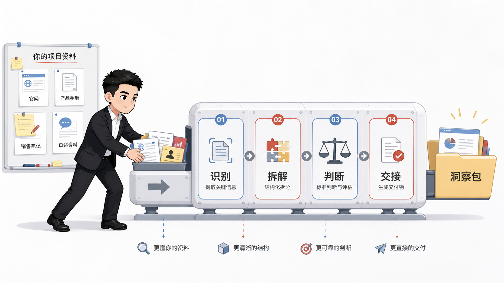
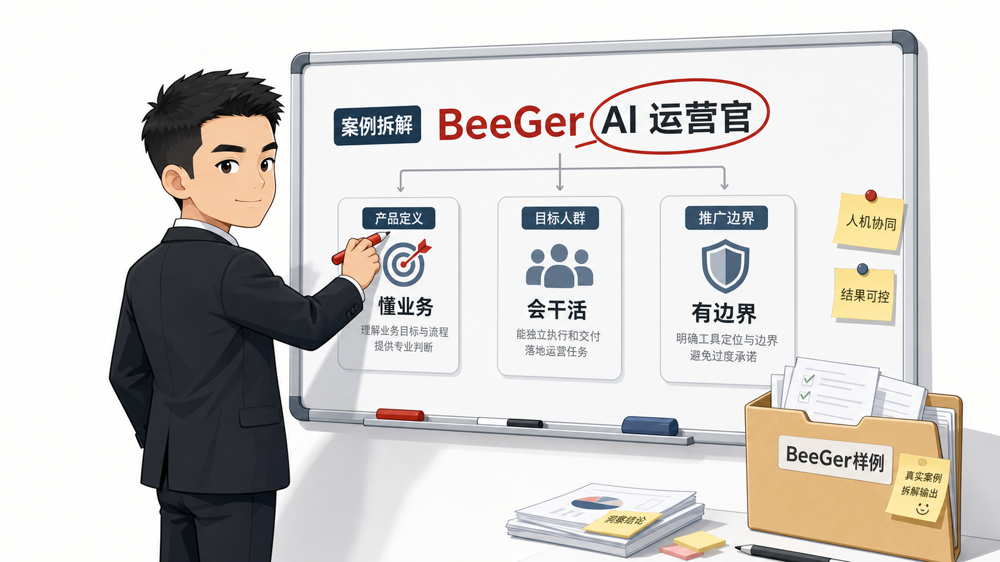

把资料喂进去
官网、项目手册、课程页、招生简章、销售笔记、竞品信息和用户口述都可以作为输入。
Skill · 项目拆解 · 宣传交接
项目洞察助手PRO读取官网、手册、课程页、口述资料和内部笔记，输出产品定义、交易交付、人群判断、成交阻力、推广打法和下游写作指令。
它只做项目洞察第一阶段，把原始资料变成可读、可判断、可交接的业务判断。
官网、项目手册、课程页、招生简章、销售笔记、竞品信息和用户口述都可以作为输入。
拆产品定义、用户买到什么、怎么交付、结果边界、适合谁、谁会反对。
输出给选题、素材、文章、短视频、销售话术和项目复盘流程继续调用。
流程固定，表达保持可读。编号、置信度和证据账本默认留在内部，审计版才展开。

先确认主体、交付物、价格、目标结果和资料缺口。
把事实、来源、时效、风险和待核验点分层记录。
说明用户买到什么、怎么交付、谁负责、边界在哪里。
识别适合对象、付款者、使用者、影响者和反对者。
给出推广主线、内容资产、转化入口和下游写作指令。
每份报告都要让用户先看懂项目，再决定怎么推广。
BeeGer 作为公开样例出现，用来展示本 skill 的拆解效果。它不改变项目洞察助手PRO的主定位。

完整样例放在 `examples/` 目录，本页展示关键片段。
先通过 GitHub 项目地址获取仓库，再把 `skill/项目洞察助手PRO/` 放入目标工具的 skills 目录。
https://github.com/liqinling1994-cloud/project-insight-pro-skill
可使用 Git 克隆，也可在 GitHub 页面下载 ZIP，解压后只安装 `skill/项目洞察助手PRO/` 这个目录。
复制到 Codex skills 目录，确认根层存在 SKILL.md。
%USERPROFILE%\.codex\skills\项目洞察助手PRO\
放入 Claude Code 可读取的 skills 目录，保持引用文件结构。
skills/项目洞察助手PRO/SKILL.md
复制到项目级或用户级 skills 目录，刷新 skill 列表后调用。
ZCodeProject/.Codex/skills/项目洞察助手PRO/
支持读取 SKILL.md 的工具，按通用 skills 结构放置。
项目洞察助手PRO/ ├─ SKILL.md ├─ references/ └─ templates/
启动项目洞察PRO，基于下面这段项目资料，输出一份干净阅读版项目洞察报告。
启动项目洞察PRO，输出审计版，包含编号、置信度、来源链和证据账本。
同步远程仓库前，检查页面、案例、教程和脚本校验，确认 GitHub 首页可直接阅读。
docs/index.html：官方展示页。examples/beeger-input.md：BeeGer 样例输入。examples/beeger-output.md：BeeGer 样例输出。docs/安装使用.md：多平台安装教程。